Бетонные полы с топпингом и полимерные покрытия. Своя бригада, своё оборудование. Оренбург.
ООО «ПРОМПОЛ777» укладывает бетонные полы с топпингом и наносит полимерные покрытия. Работаем своей бригадой со своим оборудованием. База в Оренбурге. Продаём материалы SuperTOP, BAU Schild, TOPKRAFT, LiTec и POLYTEC как дилер.
Заливаем промышленный бетон и втираем в свежий слой сухую упрочняющую смесь. Верхний слой становится прочнее. Подходит для склада, производства, торгового зала.
Подробнее о бетонных полах →Наносим эпоксидные и полиуретановые системы POLYTEC на готовое бетонное основание. Покрытие защищает пол от влаги, химии и перепадов температуры. Там, где на пол попадают кислоты и соли, топпинг не применяют.
Подробнее о полимерных полах →Продаём топпинги, пропитки, лаки, грунты и полимерные составы пяти марок. Те же материалы, что ставим на своих объектах.
Смотреть материалы →Промышленный пол делается в одну последовательность. Ошибку на раннем этапе потом не исправить затиркой.
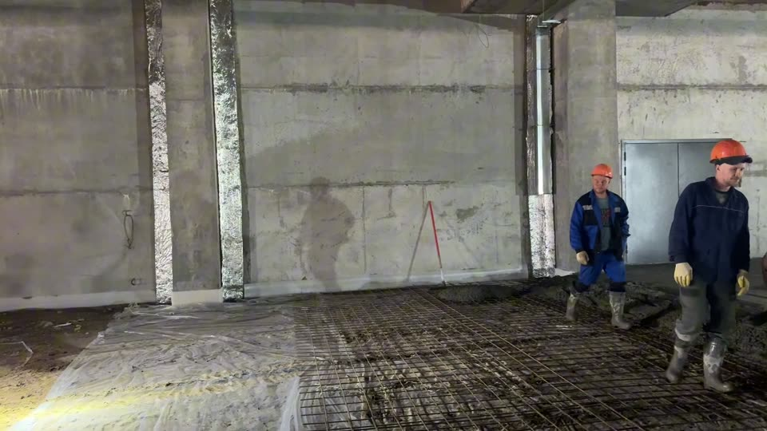
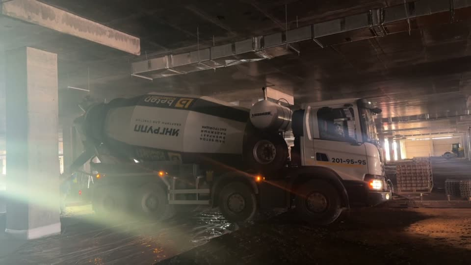
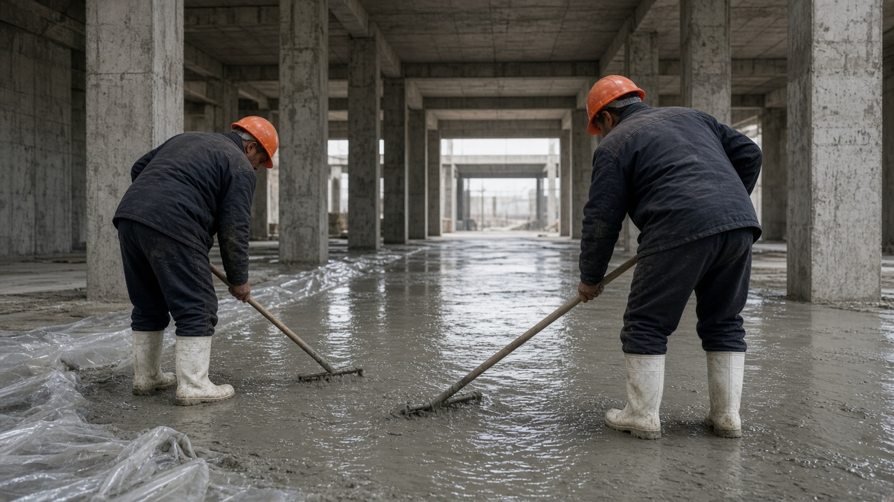
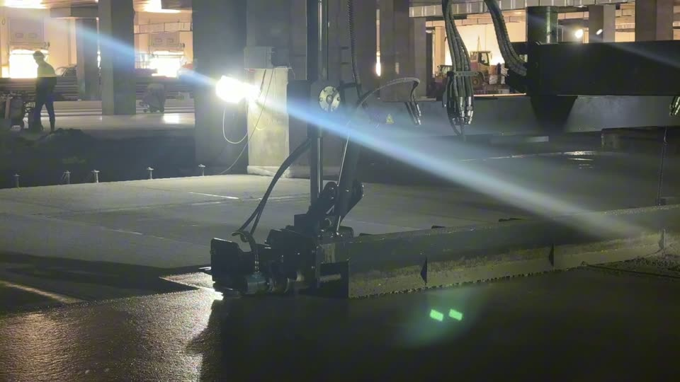
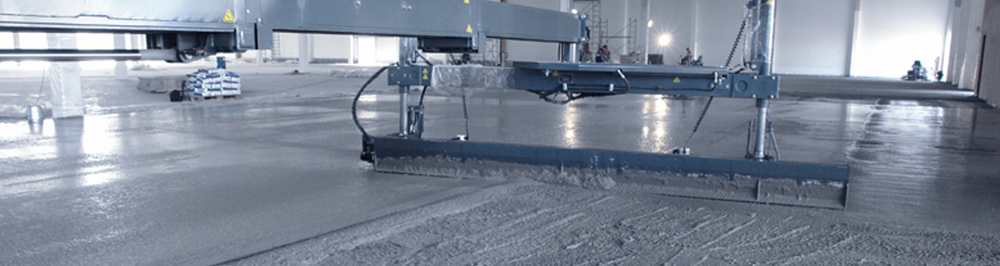
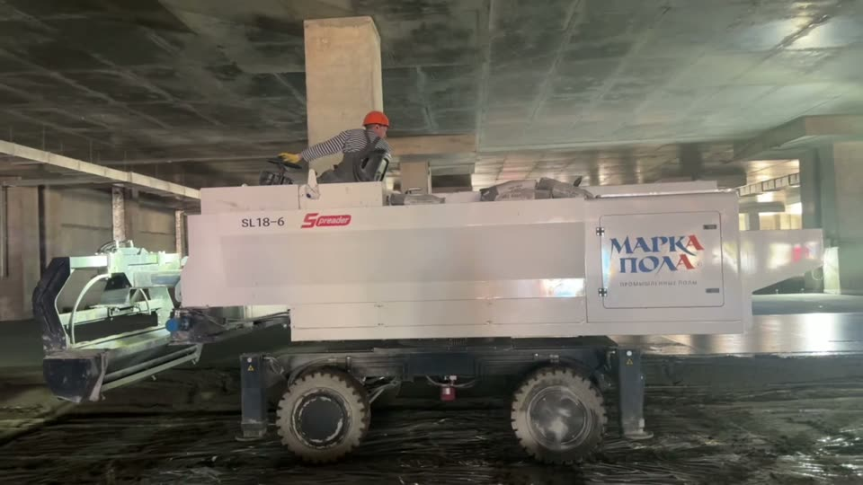
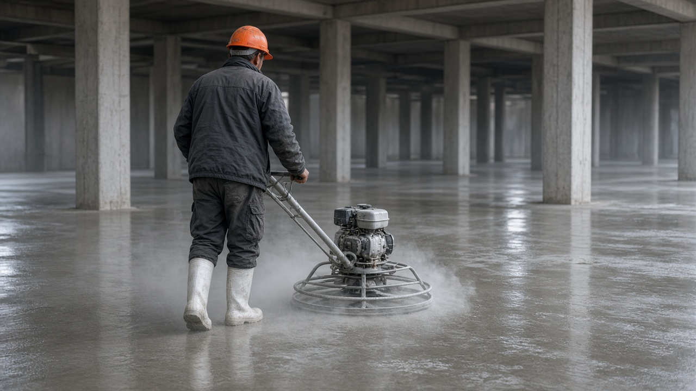
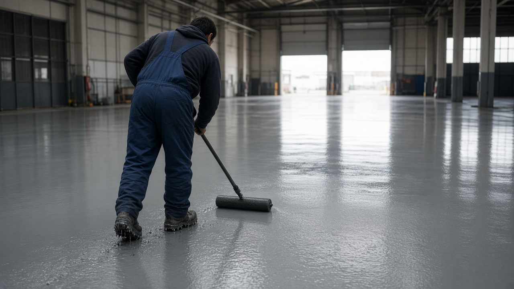
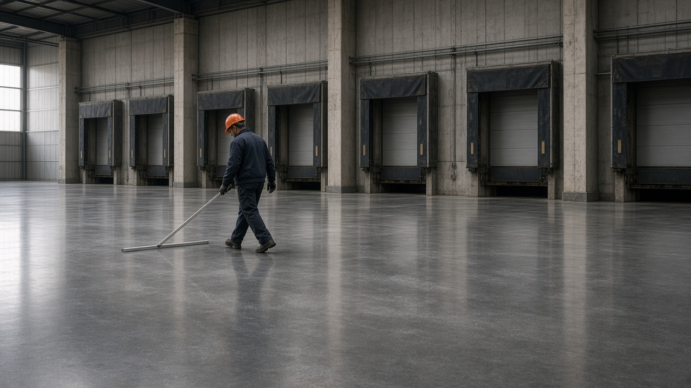
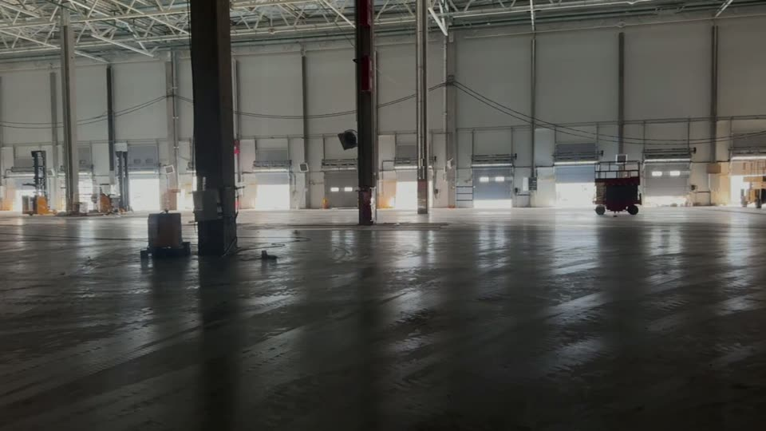
На кадрах показан ход работ и материалы.
Мы дилер. Материалы выпускает производитель. Мы укладываем ими полы и продаём их подрядчикам и заказчикам.
Топпинги на кварце и корунде. Лак SuperTop Sealer light. Упрочнение верхнего слоя бетона.
Топпинг TOP: кварц, корунд, металл. Лак BAU Schild CURE. Грунт BAUS W20. Сухие смеси и защитные покрытия.
Топпинг quarz и corund. Лаки TOPKraft CURE и AQUA CURE. Топпинг и финишная пропитка.
Пропитки LiTec PRO, Normal, Light. LiTec PRO Color. LiTec WAX. Упрочнение и обеспыливание бетона.
Эпоксидные и полиуретановые грунты. Наливные и защитные покрытия. Полиуретанцемент Polcem. Полимерные системы для складов и производств.
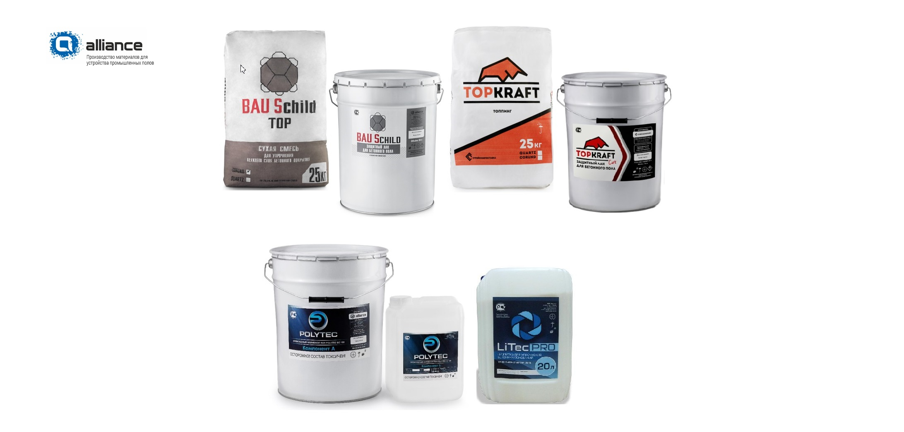
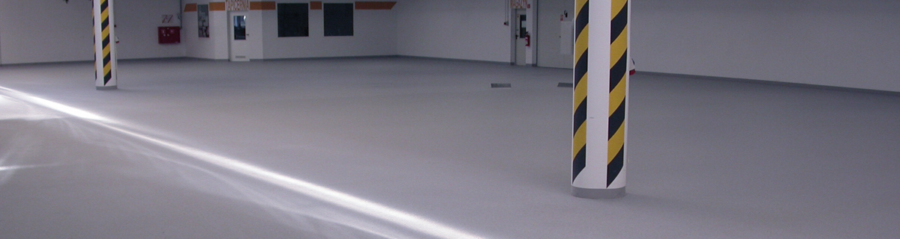
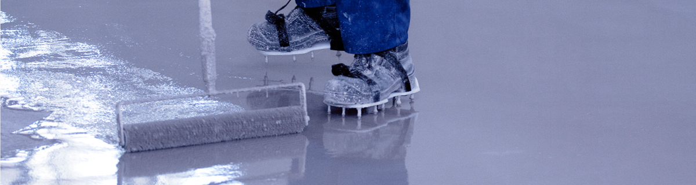
Наличие, фасовку и условия поставки уточняйте по телефону или почте. [уточнить: самовывоз или доставка, минимальная партия]
База в Оренбурге. Работаем в пяти регионах. Выезд на объект согласуем отдельно. В Оренбургской области отдельно собираем спрос по Орску.
Юридический адрес — в Оренбурге. Отдельного офиса в Орске на сайте нет, выезд в Орск согласуем. Подробнее — на странице промышленных полов в Орске.
Публичного прайса нет. Чтобы смета считалась по одним условиям, сначала зафиксируйте объект в документе и пришлите его нам.
Заполните и разошлите подрядчикам, чтобы сметы считались по одним условиям.
Получить шаблон ТЗ →Опросник по технике, стеллажам, химии и уборке. Исходные данные для ТЗ и сметы.
Получить чек-лист →Какие ошибки портят пол и какие вопросы задать подрядчику до начала работ.
Скачать гайд →Бетонные полы с топпингом и полимерные покрытия на бетонном основании. Также продаём материалы для таких полов.
Топпинг втирают в свежий бетон. Он упрочняет верхний слой. Полимер наносят на готовое основание отдельным слоем. Он защищает от влаги и химии. Там, где на пол действуют кислоты и соли, топпинг не применяют.
Цены на сайте нет. Стоимость зависит от площади, состояния основания, нагрузок и типа пола. Смету считаем по объекту.
Оренбургская область, включая Орск, а также Самарская, Саратовская и Челябинская области и Башкортостан. База в Оренбурге, выезд по согласованию. Для Орска есть отдельная страница. Отдельного офиса в Орске на сайте нет.
Да. Мы дилер SuperTOP, BAU Schild, TOPKRAFT, LiTec и POLYTEC. Напишите, что нужно и в каком объёме.
Пришлите план, площадь и сроки. Посчитаем смету на полы для вашего объекта. [уточнить: работа по договору субподряда, документы для генподрядчика]
Позвоните +7 905 843-98-18 или напишите на Petr.orsk@yandex.ru. Опишите объект, площадь и срок.
Звоните или пишите. Ответим по телефону или на почту.
Позвонить +7 905 843-98-18 Написать на почту Все реквизиты